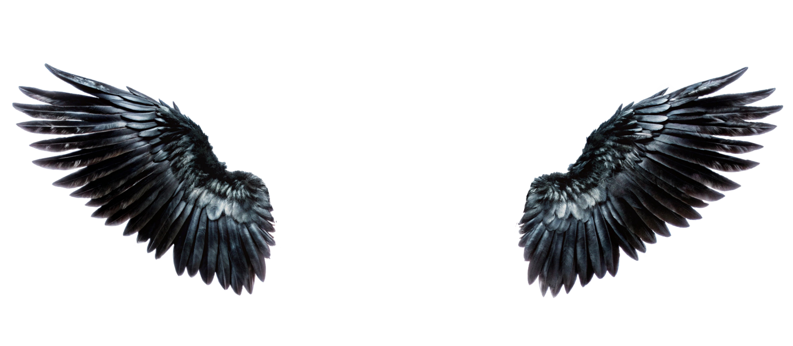

777
✦ Lucky in life, blessed in love ✦
0:00
✦
A love written in the stars
777 is a sign of soul-aligned love — the kind of connection that brings warmth, growth, and a sense of belonging. A rare bond that feels too meaningful to be accidental, as though two hearts found each other at exactly the right moment.
Lose Yourself
Eminem